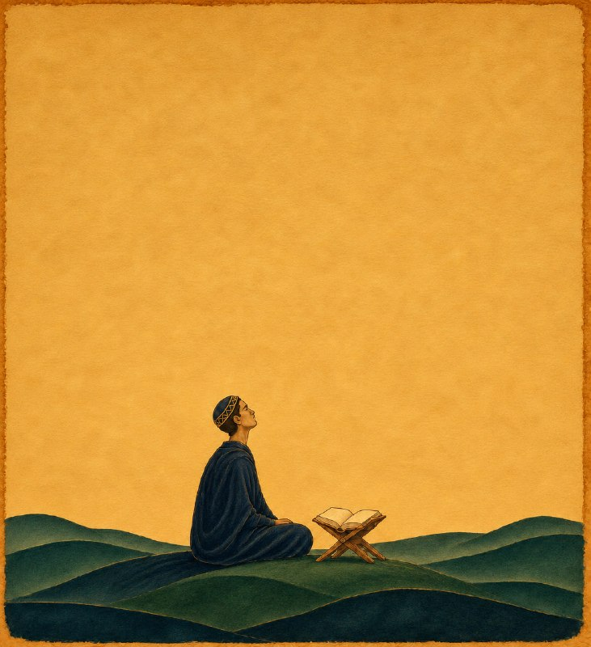

Içki olam tartibi

Inson bu dunyoda umrini xotirjamlik bilan, maʼlum bir tartibga tayangan holda ötkazişga intilmoği lozim, çunki tartibsiz keçgan hayot kişining kuçini ham, vaqtini ham, könglidagi niyatlarini ham behuda sarflab yuboradi.
Agar odamzod har bir qadamda qoqilaversa, har kuni uning boşiga biror köngilsizlik tuşaversa, goh bir buyumi sinib, goh kimdir unga qattiq gapirib, goh qozondagi ovqati kuyib qolaversa, bunday hodisalarning har biri alohida olganda arzimas bölib körinsa-da, ularning qayta-qayta takrorlanişi yaxshi emas.
Har kuni biror muammo topib turadigan, arzimagan hodisalardan katta baxtsizlik yasaydigan odamning ichki dunyosini ham, hayotini ham havas qilgudek deb bölmaydi. Bunday insonlarning hamrohlari va döstlari ham ulardan yetadigan aziyatlar sababli oğir holatda böladilar.
Çunki ular öliklarini hammaga taşlaşim joiz, hamma mening öligimni kötarişga majbur deb öylaşadi.
Vahimaçi va xayoli qora odamdan bundan bölak nima kutiş mumkin?
Şu sababli har bir kişi öz hayotini batartib, osoyişta va bir maromda ötkazişga harakat qilmoği kerak.
Mabodo inson şunday köngilsizliklarga tez-tez duç kelayotgan bölsa, avvalo sababni taşqaridan izlamasdan, özining maʼnaviy olamini, niyat va xayollarini sinçiklab tahlil qilişi, ularni taftiş qilib körişi lozim böladi.
Zotan, insonning içki dunyosida buziliş yuz berganda, bu buziliş ertami-keçmi uning taşqi dunyosida ham namoyon böladi, uning işlarida, munosabatlarida va kundalik turmuşida aks etadi.
Soğliq bilan boğliq aksariyat dardlarning ildizi ham köp hollarda inson ruhiyatidagi, uning xayollaridagi izdan çiqiş bilan aloqadordir.
Şuning uçun inson imkon qadar öz içki olamini töğri va batartib tutişi, ruhini muntazam ravişda tarbiyalab, uni bedor saqlaşi shart.
Bir joyda harakatsiz qolgan jism kasallikka çalingani kabi, tarbiyadan mahrum qolgan ruh ham zaiflaşib boradi.
Qaysi bir kişi harakatçan bölsa, har kuni piyoda yursa, sport va jismoniy maşqlar bilan muntazam şuğullansa, uning tani soğlom bölgani singari, ruhini doimo amallar bilan maşğul qilgan kishi ham ruhan soğlom va tetik böladi.
Jismning safar va sayohatlari yer yuzida keçsa, ruhning safarlari osmonlarda keçadi. Insonning tani yer yuzida yaşab tursa-da, uning ruhi osmonlarga safar qiliş imkoniyatiga ega, biroq buning uçun u osmondan tuşirilgan arqonga mahkam yopişmoği lozim.
Qalb va ruh birgalikda şu arqonni mahkam tutib turişi kerak bölib, bu arqon Allohning kalomi va Allohning zikridir.
Albatta, inson bu arqonni öz kuçi bilan mustaqil uşlab turişga intiladi, bu yölda köp harakat qiladi, biroq baʼzan arqon uning qölidan çiqib ketadi.
Jismoniy maşqlarda kişi jamoa bilan birga şuğullansa yoki biror murabbiyga ergaşsa, öz maşğulotini uzluksiz davom ettira olgani kabi, ruhiy tarbiyada ham, Allohning arqonini tutib, Uning zikrini qilişda yo solih bir rahbari bölgan jamoaga qöşilişi, yo bir ustozning etagini tutişi lozim.
Haqiqiy ustoz inson ruhiyatining Xudo bilan boğlanişiga yordam beradi, unga yöl-yöriq körsatadi va jism tirik ekan, hali yer yuzida yurgan çoğidayoq ruhning samolarga sayr qilmoği uçun kömaklaşadi.
Akrom Malik